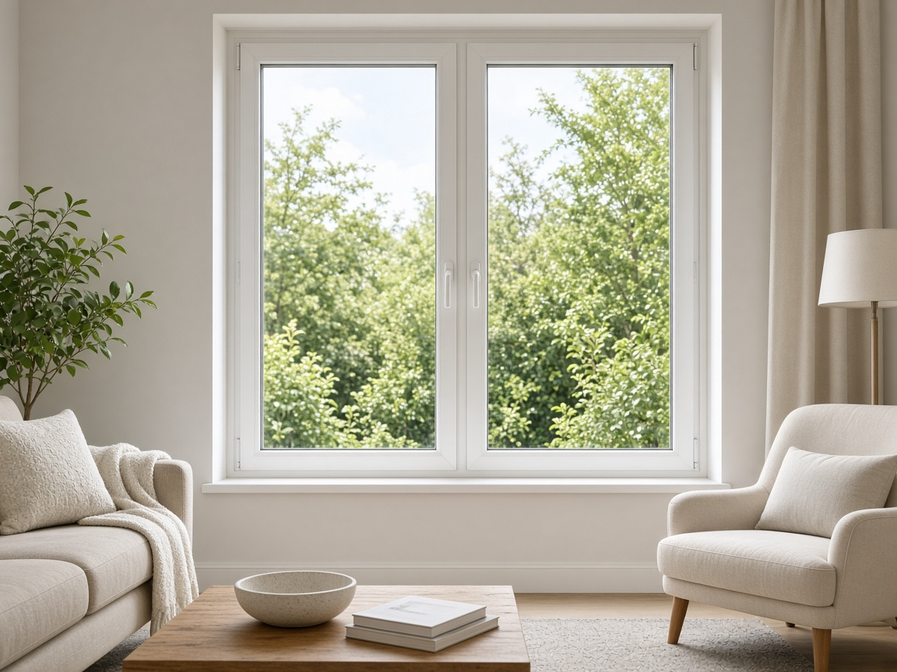

Fenêtre
1 à 3 vantaux, oscillo-battant, allège ou imposte.
ConfigurerAccueil · Fenêtre PVC
Profilé PVC 70 mm, 5 chambres, double vitrage FE. Prix immédiat.
1 à 3 vantaux, oscillo-battant, allège ou imposte.
Configurer
Seuil PMR, poignée int/ext, remplissage vitré ou plein.
ConfigurerPoignée intérieure, oscillo possible, volet monobloc en option.
ConfigurerTranslation ou double vantail, baie vitrée sur mesure.
Configurer